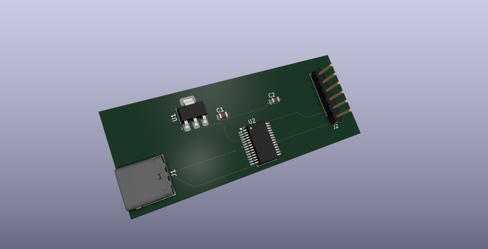

VISUEL DU PROJET / KICAD01 / FPGA + PCB
AXI4-Lite UART
& carte USB-C
Du développement RTL en Verilog à une carte deux couches autour du FT232RL : interface AXI4-Lite, UART TX/RX et FIFOs, accompagnés de testbenches et d'un environnement UVM.
Simulation et synthèse réalisées. DRC PCB : 0 erreur. Fabrication et validation physique en attente.
Voir le projet sur GitHub ↗